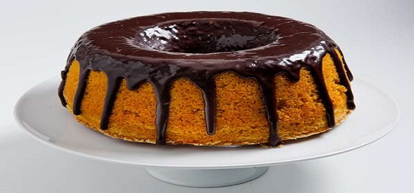

Bolo de Cenoura com Calda de Chocolate
Delicioso clássico bolo de cenoura com calda de chocolate. Esse bolo fica super fofinho, uma delícia.
Detalhes da Receita
Tempo de Preparo
30 minutos
Tempo de Cozimento
30 minutos
Tempo Total
1 hora
Porções
12
Ingredientes
- 4 ovos
- 1 e 1/2 xícara de cenoura ralada
- 1 xícara de óleo
- 1 e 1/4 xícara de açúcar
- 2 xícaras de farinha de trigo
- 1 colher sopa de fermento em pó
Instruções
- Pré-aqueça o forno a 180 graus C.
- Unte uma forma com manteiga e farinha de trigo. Se usar forma de silicone não precisa untar.
- Bata no liquidificador os ovos, a cenoura e o óleo.
- Misture numa tigela a farinha, o açúcar e o fermento.
- Vá adicionando a mistura do liquidificador na tigela e misturando até que esteja tudo bem incorporado.
- Leve ao forno por aproximadamente 30 minutos (depende do forno). Faça o teste do palito de madeira para verificar se está pronto.
Preparando a Cobertura do Bolo
- 4 colheres cheias de açúcar
- 2 colheres cheias de chocolate em pó
- 1 colher de manteiga
- Um pouquinho de leite, apenas para desmanchar
Coloque todos os ingredientes em uma panela e leve ao fogo, sempre mexendo, até ferver um pouco.
Faça furos no bolo para o chocolate escorrer pelo meio do bolo.